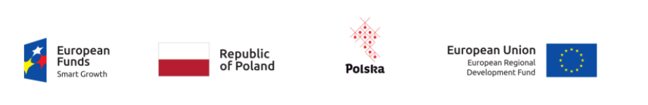

SPEKTRUM
Name of the programme: Pomorskie Voivodeship Regional Operational Programme for 2014-2020
Measure: 2.4. Business Support
Sub-measure: 2.4.1 Specialist Advisory Services
Project name: „SPEKTRUM. Pomorski System Usług Doradczych”/„SPEKTRUM.Pomeranian System of Advisory Services”
Agreement number: UDG-SPE.03.2022/030
Main goal: Purchase of specialist advisory services such as optimization of marketing activities and financial audits.
Duration: 08.2022 – 11.2022
Total budget: 53.689,50 PLN
EU contribution: 21.825 PLN
Name of the programme: Pomorskie Voivodeship Regional Operational Programme for 2014-2020
Measure: 2.4. Business Support
Sub-measure: 2.4.1 Specialist Advisory Services
Project name: „SPEKTRUM. Pomorski System Usług Doradczych”/„SPEKTRUM.Pomeranian System of Advisory Services”
Agreement number: UDG-SPE.03.2022/062
Main goal: Purchase of specialist advisory service such as improving the efficiency of the process of negotiating contracts with customers.
Duration: 09.2022 – 09.2022
Total budget: 17.466 PLN
EU contribution: 7.100 PLN
Projects co-financed from European Union funds under the European Regional Development Funds as a part of the Pomorskie Voivodeship Regional Operational Programme for 2014-2020. Projects implemented as a part of the grant project called „SPEKTRUM. Pomeranian System of Advisory Services”.
Go To Brand
Name of the programme: Smart Growth Operational Programme 2014-2020
Measure: 3.3. Support for promotion and internationalization of innovative enterprises
Sub-measure: 3.3.3 Support for SMEs in promotion of product brands – Go to Brand
Project name: Internationalisation of the Handsontable brand through promotion on international markets
Agreement number: POIR.03.03.03-22-0006/20-00
Main goal: The main goals of the project are: increase in export, increase incompetitiveness, establishing new business contacts and promoting the PolishEconomy Brand by participating in marketing activities planned in the ITprogramme.
Duration: 11.2020 – 12.2021
Total budget: 208.800 PLN
EU contribution: 177.480 PLN
Project co-financed from European Union funds under the European Regional Development Funds as a part of the Smart Growth Operational Programme 2014-2020.
Fast Track
Name of the programme: Smart Growth Operational Programme 2014-2020
Measure: 1.1.R&D projects of enterprises
Sub-measure: 1.1.1. Industrial research and development works conducted by enterprises
Project name: "Development of the high-performance calculation engine for processing tabular data of the significant size on mobile devices and workstationsusing parallel computing and GPU."
Agreement number: POIR.01.01.01-00-0223/18-00
Main goal: This strategic programme comprises actions targeted at creating themost efficient way to compute large tables containing Excel-like formulas usingonly JavaScript.
Results: We aim to create an efficient calculation engine to be released as a) anindependent, open source, GPLv3-licensed library and b) a plugin toHandsontable Commercial Edition.
Duration: 09.2018 – 12.2019
Total budget: 1.117.275,87PLN
EU contribution: 771.807,73PLN
Project co-financed from European Union funds under the European Regional Development Funds as a part of the Smart Growth Operational Programme. Project implemented as a part of the National Centre for Research and Development: Fast Track.